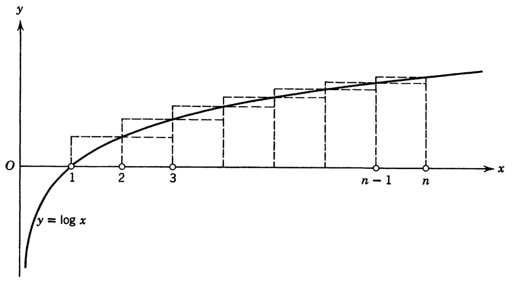
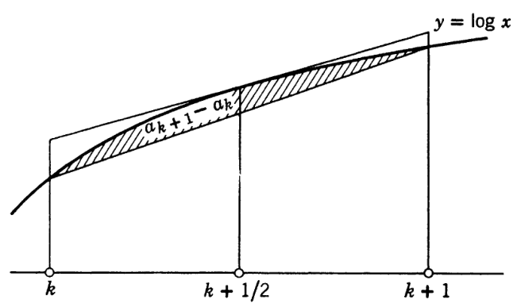

在许多应用中，特别是在统计学与概率论中，我们需要一个 n 的简单初等函数来近似 n!。下面的定理便给出这样的表达式。它以发现者斯特林的名字命名（另见第八章第 630 页）。
当 n→∞ 时，
2πnn+1/2e−nn!⟶1.(14)更准确地说，
2πnn+1/2e−n<n!<2πnn+1/2e−n(1+4n1).(14a)也就是说，当 n 很大时，n! 和 2πnn+1/2e−n 只相差一个很小的百分比。我们称这两个表达式渐近相等。同时，因子 1+1/4n 给出了近似精度的估计。
试着计算曲线 y=logx 下的面积，就会引出这个值得注意的公式。¹ 用积分法（第 276 页）可以精确求出曲线与横坐标 x=1、x=n 处两条纵线之间的曲边图形的面积 An：
An=∫1nlogxdx=(xlogx−x)∣1n=nlogn−n+1.(15)原注 1（第 504 页） 这里所用的方法是欧拉–麦克劳林公式的一个特殊情形，该公式将在第八章第 624 页讨论。
另一方面，若在 x=1,x=2,…,x=n 各处作纵线（图 6.8），用梯形公式来估计面积，就得到近似值 Tn（参看第 483 页式 (6)）
Tn=log2+log3+⋯+log(n−1)+21logn=logn!−21logn.(16)
图 6.8 用梯形近似对数曲线下的面积
如果作一个合乎情理的猜想，认为 An 与 Tn 的数量级相同，我们立刻就会猜到 n! 与 nn+1/2e−n 的数量级相同。这大体上就是斯特林公式所说的事。
要使这个论证严密，先来证明差 an=An−Tn 有界。这样马上就有 Tn=An(1−an/An) 与 An 同阶。差值 ak+1−ak 等于窄条 k<x<k+1 内曲线下的面积减去割线下的面积。因为曲线是凹的，位于割线上方，ak+1−ak 为正，于是
an=(an−an−1)+(an−1−an−2)+⋯+(a2−a1)+a1单调递增。另一方面，ak+1−ak 显然小于在 x=k+21 处的切线下的面积与割线下的面积之差（图 6.9）。因此
ak+1−ak<log(k+21)−21logk−21log(k+1)=21log(1+2k1)−21log[1+2(k+21)1]<21log(1+2k1)−21log[1+2(k+1)1].
图 6.9 对数曲线与割线之间的面积
将这些不等式对 k=1,2,…,n−1 相加，右边的项除两项外全都抵消。由于 a1=0，得到
an<21log23−21log(1+2n1)<21log23.an 既有界又单调递增，因此当 n→∞ 时趋于一个极限 a。再用刚才关于 ak+1−ak 的不等式，得到
a−an=k=n∑∞(ak+1−ak)<21log(1+2n1).按定义 An−Tn=an，所以由式 (15)、(16) 有
logn!=1−an+(n+21)logn−n.或者，记 αn=e1−an，便有
n!=αnnn+1/2e−n.数列 αn 单调递减，趋于极限 α=e1−a。因此
1<ααn=ea−an<e(1/2)log(1+1/2n)=1+2n1<1+4n1,从而
αnn+1/2e−n<n!<αnn+1/2e−n(1+4n1).现在只剩下确定极限 a 的实际数值。为此用到第三章第 282 页的式 (80)
π=n→∞lim(2n)!n(n!)222n.将 n! 换成 αnnn+1/2e−n，将 (2n)! 换成 α2n22n+1/2n2n+1/2e−2n，立刻就得
π=n→∞limα2n2αn2=α2α2.因此 α=2π，斯特林公式得证。
译者注 梯形求积先把问题化为一个趋于常数的误差 an。回到阶乘本身时，这一加法误差变成乘法因子 αn。最后用第三章的极限公式确定其极限 α，这一步才说明系数为什么恰好是 2π。
斯特林公式除了具有理论上的意义，还是计算大数 n 的阶乘 n! 的好工具。我们只须借助对数计算斯特林表达式，运算次数比把一长串整数逐个相乘少得多。例如 n=10 时，用七位数表算出的斯特林近似值为 3598696，而 10! 的精确值为 3628800，百分误差才约 65%。